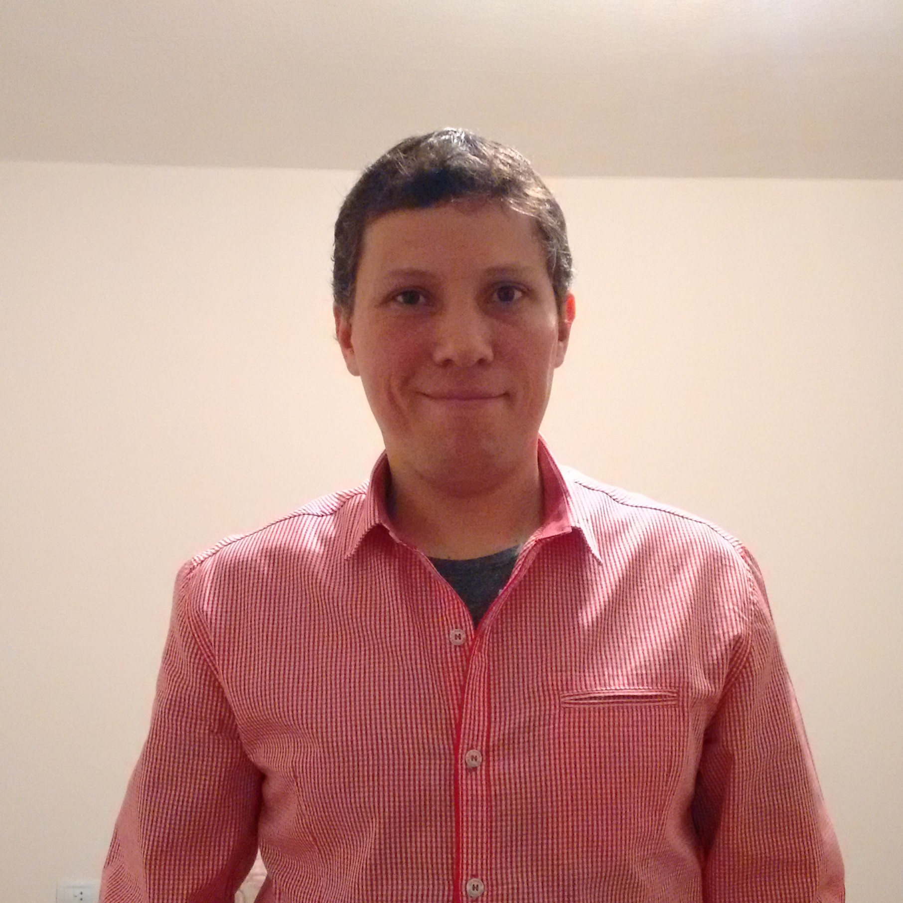

Descripción Personal:
Técnico informático, en constante capacitación y aprendizaje; tanto de Hardware como de Software; y seguir actualizado con las nuevas tecnologías.
Educación: Secundario completo -Bachiller informático / Universitario incompleto - Ingeniería en Sistemas.
Experiencias Laborales:
* Backup Computación - Soporte Técnico de Hardware y Software de computadoras y notebooks. Desde 10/2018 - Presente
* Consultores de Empresas - Administrador Técnico Infraestructura y Soporte IT Semi Senior. Desde 06/2018 - 08/2018
* Desol SA Contact Center Solutions - Administrador Técnico Infraestructura y Soporte IT Senior. Desde 11-2017 - 06/2018
* Ipxon Networks - Soporte IT en Infraestructura, Networking, Server y Webhosting. Desde 11/2010 - 11/2017
Skills:
* Idioma Inglés Técnico comprension avanzada en lectura. Oral intermedio.
* Reparación PC y equipos informáticos.
* Implementación de entornos y sistemas virtualizados: Citrix Xenserver, VMWare.
* Sistemas Operativos Windows Server, Linux CentOS, Debian.
* Networking Cisco, protocolos de enrutamiento, VLANS, direccionamiento VLSM
* Conocimientos universitarios adquiridos: C++, Java, Smalltalk, Consultas base de datos SQL
Foto:
Hobbies:
* Jardinería.
* Running.
* Crossfit.
* Series y Películas de fantasía, Ciencia Ficción, Acción.
* Video Juegos.
* Mi familia.
Porque estudio la carrera Henry y expectativas:
El contexto actual del sector tecnológico, muestra que hoy hay una alta demanda de programadores; y gracias a sitios como Soy Henry es posible aprender y capacitarse, y convertirse en un profesional programador.
Además cuenta con el incentivo que el estudiante puede hacer el curso, y abonar su costo luego de finalizar y conseguir su primer empleo como programador.
Esto suma mucho, porque hoy en Argentina es muy complicado capacitarse, ya que los sueldos en su mayoria; y me incluyo; apenas alcanzan para cubrir las necesidades de una persona y su familia.
Mis expectativas son convertirme en un buen programador, gracias a Henry y a su equipo de docentes. Poder acceder con mis conocimientos adquiridos a un buen puesto de trabajo y bien remunerado, y devolverle a Henry todo lo que me ha brindado durante los 8 meses de capacitación.